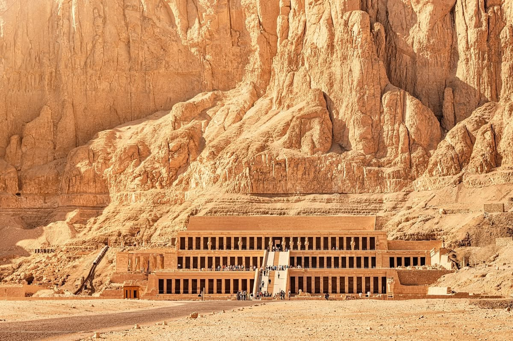

Hatshepsut Temple

The Mortuary Temple of Hatshepsut, located beneath the towering cliffs at Deir el-Bahari, is a masterpiece of ancient architecture that seamlessly blends with its dramatic natural surroundings. Designed by the royal architect Senenmut, the temple departs from traditional massive pylon structures, instead utilizing a series of three majestic, colonnaded terraces connected by long ramps. It serves as a striking monument to one of Egypt's most successful—and rare—female pharaohs. The temple's walls are adorned with intricate, highly detailed reliefs that tell the story of Hatshepsut's reign and seek to legitimize her rule. Notable depictions include the tale of her divine birth, claiming the god Amun as her father, and the famous trading expedition to the Land of Punt, which brought back exotic goods like myrrh trees, frankincense, and wild animals. In later centuries, the site was used as a Coptic Christian monastery, which gave it its modern Arabic name, Deir el-Bahari ("The Northern Monastery").
| Location | Ticket Price (Foreign Tourist) | Visiting Hours |
|---|---|---|
| Deir el-Bahari, West Bank, Luxor |
Adult: 360 EGP Student: 180 EGP |
6:00 AM – 5:00 PM |